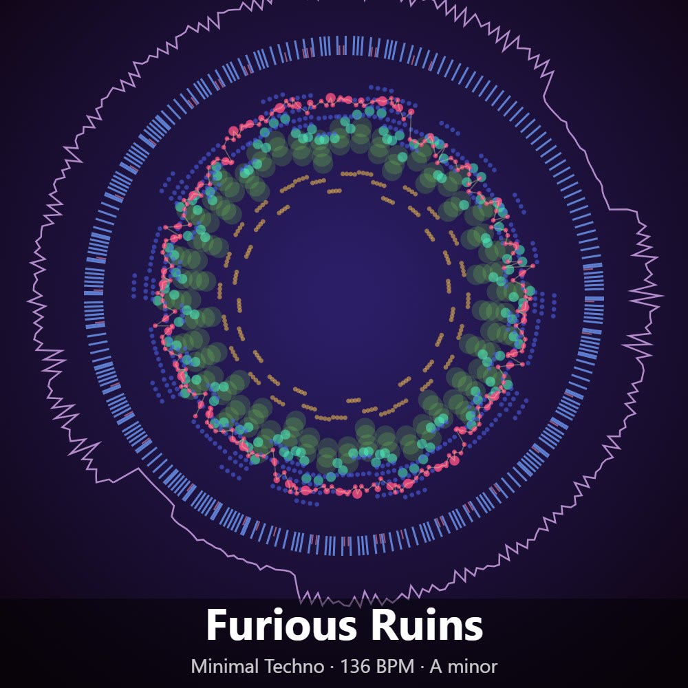

Furious Ruins

Four-on-the-floor drums, a sawtooth bass and a sawtooth lead over sawtooth pads: a dark minimal techno song at 136 BPM in A minor, 1:25 long across 8 sections.
Made with Randis UDS, a free desktop app that builds the tools you describe.